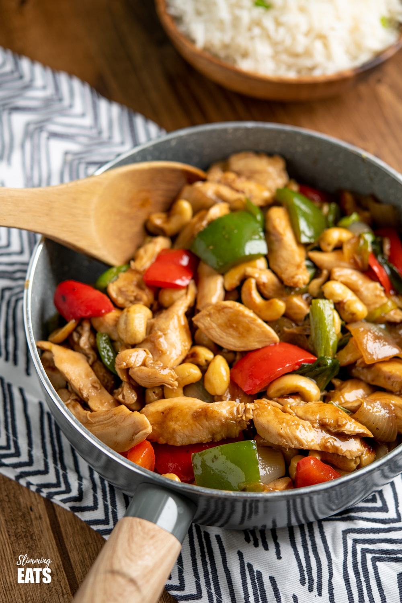

Cashew Chicken

Cashew chicken is a dish widely eaten in Thailand.While Thai Cashew Chicken is not as saucy as Chinese Kungpao Chicken, what it lacks in sauciness it makes up for in big flavour. Crunchy golden cashews and chicken are tossed in a simple yet bold Thai stir fry sauce with as much or as little fresh chilli as you want!
Ingredients
You will need the follow ingredients in order to make this yummy cashew concoction:
- sesame oil
- oyster sauce
- soy sauce
- Chinese wine
- cornstarch
- chicken
- sliced bell peppers
- sliced onion and garlic
- cashew
Directions
- Mix sesame oil, oyster sauce, soy suace, chinese wine and cornstarch together into a bowl.
- Put half the sauce aside and marinate chicken for 10 minutes in the sauce.
- Saute the garlic and onion in a pan for 1 minute.
- Add in the chicken and bell peppers and cook for 3 minutes, stirring occasionally.
- Add sauce and simmer for 1 minute until thickened.
- Serve over rice!
Checkout More Recipes below: